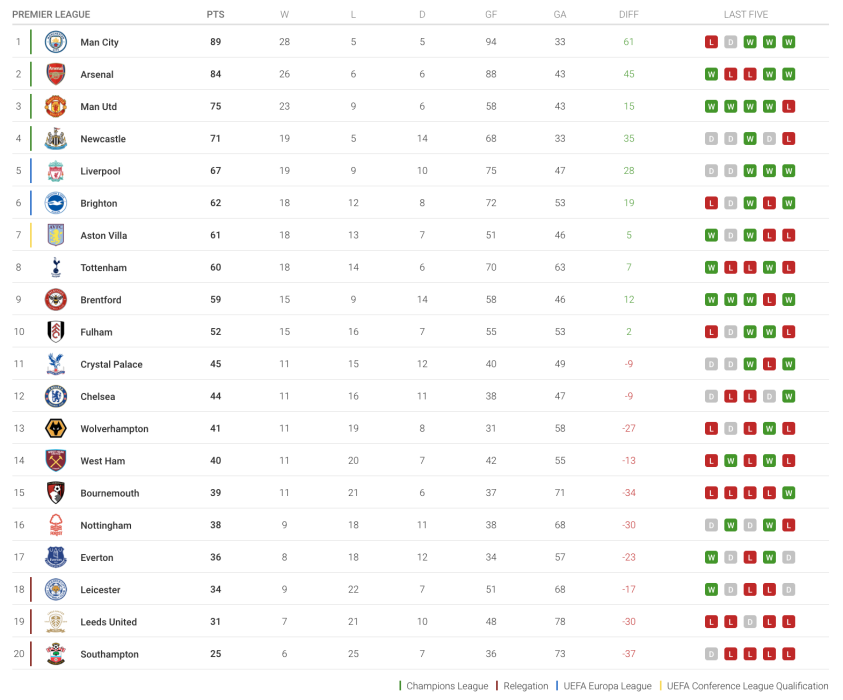

.png)
Design and Mockups
Critical Consideration of Strengths and Weaknesses
Strengths:
-
Contrast
Application: The use of contrasting colors in the navigation bar and buttons enhances visibility and directs user attention to important elements. The contrast between text and background makes the content easier to read.
Theory Relation: Using differing colors effectively guides users through the interface, improving the overall user experience.
-
Negative Space
Application: Effective use of negative space allows users to focus on specific content without feeling overwhelmed.
Theory Relation: The theory of negative space suggests that the space around elements is crucial for a clean design.
-
Font Choice and Hierarchy
Application: Complementary fonts contribute to brand identity, with clear hierarchy guiding users from headings to body text.
Theory Relation: Effective typography influences readability and user engagement.
-
Information Layout
Application: The logical layout facilitates easy navigation and quick understanding of statistics.
Theory Relation: Information architecture emphasizes the importance of organizing content logically.
-
Interactivity
Application: Interactive elements engage users and provide an immersive experience.
Theory Relation: User engagement improves through dynamic content.
Weaknesses:
-
Over-Reliance on Contrast
Issue: Overuse of bright colors may lead to visual strain for some users.
Theory Relation: Accessibility principles emphasize inclusivity and adherence to standards.
-
Insufficient Negative Space in Certain Areas
Issue: Cramped appearances in certain sections can hinder quick information processing.
Theory Relation: Cluttered designs can overwhelm users, leading to cognitive overload.
-
Font Legibility
Issue: Small text sizes may be challenging to read on devices, particularly for visually impaired users.
Theory Relation: Legibility is vital for effective communication.
-
Information Overload
Issue: Instances of information overload may occur without sufficient contextual guidance.
Theory Relation: Excessive data can hinder user comprehension.
-
Interactivity Limitations
Issue: Some interactive elements may not be optimized for all devices, particularly mobile.
Theory Relation: Responsive design ensures all features function seamlessly across devices.
Data-Driven Storytelling
The RNZ project excels in combining narrative elements with data-driven storytelling, enhancing effective communication in data journalism.
Narrative Integration
Effectiveness: The project introduces key concepts and contextual information, preparing users to engage with the data visualizations.
Importance of Narrative: By framing data within a story, the RNZ project helps users understand the real-world implications of the data.
Data Visualization Techniques
The RNZ project employs various visualization techniques to present complex ecological data.
Maps
Effective Example: An interactive map where users can hover over regions to see detailed information.
Bar Charts
Effective Example: Well-designed bar charts with consistent color schemes and clear labels.
Line Graphs
Effective Example: Clear and organized line graphs with distinct colors and consistent intervals.
Interactivity and User Engagement
Interactivity enhances user engagement and makes complex data more accessible.
Hover-Over Data Points
Effective Example: The RNZ project uses hover-over data points effectively, providing concise, relevant information.
Clickable Regions
Effective Example: Clickable regions on the map provide additional information seamlessly.
UI/UX Design Principles
The RNZ project exemplifies effective UI/UX design principles.
Consistency
Effective Example: Cohesive design elements guide users smoothly through the content.
Accessibility
Effective Example: The RNZ project ensures that information is accessible to a wider audience.
Responsiveness
Effective Example: The RNZ project adapts well to different screen sizes and devices.
Emotional Impact
The RNZ project’s design choices contribute significantly to the emotional tone and overall message.
Color Palette and Visual Tone
Effective Example: A muted, natural color palette evokes the fragility of ecosystems.
Use of Imagery
The effective use of images of endangered species evokes empathy and concern.
Chart Design
The scatter plot on the EFL page was created using the D3.js library.

Description: This is a mockup for the chart layout, visualizing teams' wins vs. performance in the 2022-23 season.
Design Mockup

Description: A comprehensive design mockup showing how different EPL statistics can be visualized.
Logo Design Section
Description: A preview of the logo design mockup.
Logo Design Section
.png)
Description: A preview of the logo design mockup.